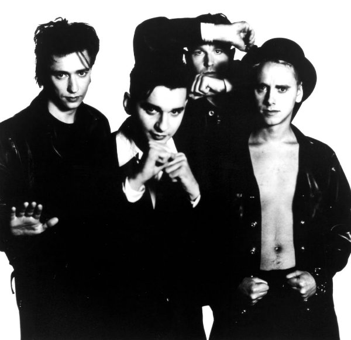

La band nasce dall’incontro tra Vince Clarke, Martin Gore, Andrew Fletcher e Dave Gahan.
Il loro album di debutto, Speak & Spell (1981), trainato dal singolo "Just Can’t Get Enough", ottiene un grande successo, ma poco dopo Clarke lascia il gruppo. Sarà Martin Gore a prendere in mano la scrittura delle canzoni, dando vita a un sound più maturo e sperimentale. Negli anni ’80, album come A Broken Frame (1982), Construction Time Again (1983) e Some Great Reward (1984) segnano una crescita artistica, culminata nel 1986 con Black Celebration, che introduce atmosfere più oscure e profonde.
Il successo planetario arriva con Music for the Masses (1987) e, soprattutto, con Violator (1990), che contiene hit indimenticabili come "Personal Jesus", "Enjoy the Silence" e "Policy of Truth". L’album consacra i Depeche Mode come icone globali e li porta a suonare davanti a oltre 60.000 persone al Rose Bowl di Pasadena, un evento storico per la musica elettronica.
Dopo il trionfo di Songs of Faith and Devotion (1993), il gruppo attraversa un periodo difficile segnato dai problemi di dipendenza di Dave Gahan, il ritiro di Alan Wilder (membro chiave dal 1982) e la depressione di Gore e Fletcher. Tuttavia, con grande determinazione, i Depeche Mode tornano in scena con Ultra (1997), dimostrando di essere ancora una forza creativa dominante.
Negli anni 2000 e 2010, album come Exciter (2001), Playing the Angel (2005) e Delta Machine (2013) confermano il loro status di band leggendaria. Nel 2023, dopo la scomparsa di Andrew Fletcher, il duo Gahan-Gore pubblica Memento Mori, un album profondo e riflessivo che continua a esplorare temi esistenziali e sonorità elettroniche raffinate.
Con oltre 100 milioni di dischi venduti, i Depeche Mode hanno ispirato generazioni di artisti e lasciato un segno indelebile nella musica contemporanea. Il loro sound innovativo, l’estetica distintiva e le performance energiche continuano a conquistare fan in tutto il mondo, dimostrando che il loro viaggio musicale è tutt’altro che finito.